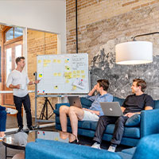
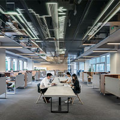

Proses
dengan adanya flow sangat mempermudah proses pembuatan project
-

25 Maret 2022
Pembagian Tugas
sebelum kita memulai mengerjakan project, kita mendiskusikan pembagian tugas agar mempercepat proses pengerjaan. dengan ketentuan, Aunur Rosyidi dan Maulana Alfan sebagai Designer,Ardian Majid dan Thoriq Aziz sebagai Developer, sedangkan Andi Iman Wahyudi sebagai Tester
-

26-27 Maret
Design Dimulai
kita semua bekerja sama untuk membantu Aunur Rosyidi dan Maulana Alfan agar dapat menyelesaikan Designnya, serta agar bagian developer bisa menyesuaikan dengan design yang ada
-

27-29 maret
Proses Develop
Setelah Design nya selesai pada hari minggu. kita juga langsung membuatkan kodenya sesuai dengan design yang sudah disepakati bersama. karena kerja sama tim yang baik, develop dapat diselesaikan dalam rentang waktu 3 hari
-

30 maret
Tester
Kita bersama-sama berkumpul untuk melakukan Test terhadap website yang sudah kita buat bersama dan kita setuju untuk mengikuti komentar dari Andi Imam Wahyudi selaku testernya
-
Alhamdulillah
Project kita
selesai